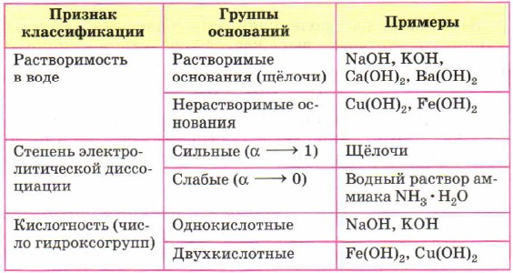

Соли — это класс химических соединений, состоящих из ионов металла и ионов кислотного остатка.
Средние соли — это продукты полного замещения атомов водорода в кислоте на металл.
Кислые соли — это продукты неполного замещения атомов водорода в кислоте на металл.
Основные соли — это продукты неполного замещения гидроксогрупп в основании на кислотный остаток.